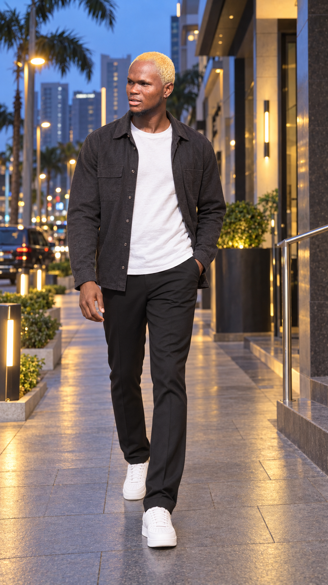

FAVORR is a Nigerian singer, songwriter and producer creating music with emotion, melody and an unmistakable identity.
As both an artist and producer, FAVORR brings together songwriting, vocals and production to create records that reflect his own creative world.
His visual identity is built around acid green — bold, distinctive and impossible to ignore.
Official release: October 29.
Streaming and listening links will be available here upon release.
Listen to FAVORR across major streaming platforms.
For interviews, media coverage, performance opportunities and professional inquiries, contact FAVORR's management.
FAVORR's official Electronic Press Kit and press materials are available through V3rse Elite Management.
Press:
press@favorrofficial.com
V3rse Elite Management
Booking:
booking@favorrofficial.com
Where talent becomes global.